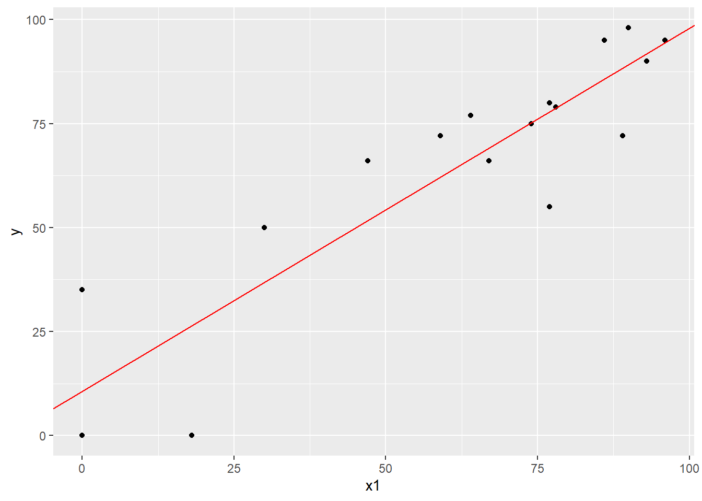

5 Estimação e Teste de Hipóteses
O modelo de regressão linear simples para \(n\) observações pode ser escrito como:
\[ y_i = \beta_0 + \beta_1 x_i + \epsilon_i \space , \quad \text{para } i = 1, \dots,n \]
em que:
\(y\) é a variável resposta;
\(x_i\) é a variável regressora (única variável preditora de \(y\));
\(\beta_0 \text{ e } \beta_1\) são os parâmetros do modelo;
\(\epsilon_i\) o termo de erro do modelo.
Como suposições do modelo, temos:
\(E(\epsilon_i) = 0, \forall \space i = 1,\dots,n\) e \(E(y_i) = \beta_0 + \beta_1 x_i\), ou seja, \(y_i\) só depende de \(x_i\) e que outras variações são aleatórias;
\(var(\epsilon_i) = \sigma^2, \forall \space i = 1,\dots,n\) e \(var(y_i) = \sigma^2\), ou seja, a variância não depende dos valores de \(x_i\) (homocedasticidade);
\(cov(\epsilon_i, \epsilon_j) = 0, \forall \space i \ne j\) e \(cov(y_i, y_j) = 0\), portanto, não correlacionados entre si.
O exemplo a seguir trata da seguinte situação: Estudantes de Estatística alegam que as tarefas de casa não ajudam a prepará-los para o exame final. Os escores do exame (\(y\)) e das tarefas (\(x\)) para os 18 alunos da classe foram:
O objeto y, variável resposta, corresponde aos escores na prova e o x1, variável regressora, aos escores nas tarefas.
options nocenter ls=90 ps=1000;
title 'Exemplo 6.2. Relation between exam score (y) and homework score (x)';
proc iml;
y = {95,80,0,0,79,77,72,66,98,90, 0,95,35,50,72,55,75,66};
x1 = {96,77,0,0,78,64,89,47,90,93,18,86, 0,30,59,77,74,67};5.1 Análise exploratória
Para visualizar a dispersão dos dados, construiremos um gráfico de pontos (gráfico de dispersão) entre as notas dos alunos na prova (y) e nas tarefas de casa (x1). Para isso, utilizaremos os recursos do pacote ggplot2.
notas <- data.frame(y, x1)
notas y x1
1 95 96
2 80 77
3 0 0
4 0 0
5 79 78
6 77 64
7 72 89
8 66 47
9 98 90
10 90 93
11 0 18
12 95 86
13 35 0
14 50 30
15 72 59
16 55 77
17 75 74
18 66 67ggplot(data = notas, aes(x = x1, y = y)) +
geom_point()Primeiramente, criamos um data frame com as notas dos alunos. Em seguida, com a função ggplot(), atribuímos a variável nota nas tarefas (x1) ao eixo das abscissas e a nota na prova (y) ao eixo das ordenadas. Com a geom_point(), adicionamos a camada gráfica referente à geometria de pontos, ou seja, a geometria do gráfico de dispersão. Note que as funções ggplot() e geom_point() são ligadas pelo operador +.
5.2 Estimação dos parâmetros \(\beta_0\) e \(\beta_1\)
Para estimar os parâmetros \(\beta_0\) e \(\beta_1\), utilizaremos o Método dos Mínimos Quadrados Ordinários (MQO). O método consiste em achar os estimadores \(\hat\beta_0\) e \(\hat\beta_1\) que minimizem a soma de quadrados dos desvios \(\sum^n_{i=1} (y_i - \hat{y}_i)^2\).
Primeiramente, criaremos os seguintes objetos:
n: número de observações \(n\);jn: vetor coluna de 1’s \(\mathbf{j}\);Jnn: matriz de 1’s \(\mathbf{J}\);In: matriz identidade \(\mathbf{I}\).
n <- length(y)
n[1] 18jn <- matrix(data = 1, nrow = n, ncol = 1)
jn [,1]
[1,] 1
[2,] 1
[3,] 1
[4,] 1
[5,] 1
[6,] 1
[7,] 1
[8,] 1
[9,] 1
[10,] 1
[11,] 1
[12,] 1
[13,] 1
[14,] 1
[15,] 1
[16,] 1
[17,] 1
[18,] 1 [,1] [,2] [,3] [,4] [,5] [,6] [,7] [,8] [,9] [,10] [,11] [,12] [,13]
[1,] 1 1 1 1 1 1 1 1 1 1 1 1 1
[2,] 1 1 1 1 1 1 1 1 1 1 1 1 1
[3,] 1 1 1 1 1 1 1 1 1 1 1 1 1
[4,] 1 1 1 1 1 1 1 1 1 1 1 1 1
[5,] 1 1 1 1 1 1 1 1 1 1 1 1 1
[6,] 1 1 1 1 1 1 1 1 1 1 1 1 1
[7,] 1 1 1 1 1 1 1 1 1 1 1 1 1
[8,] 1 1 1 1 1 1 1 1 1 1 1 1 1
[9,] 1 1 1 1 1 1 1 1 1 1 1 1 1
[10,] 1 1 1 1 1 1 1 1 1 1 1 1 1
[11,] 1 1 1 1 1 1 1 1 1 1 1 1 1
[12,] 1 1 1 1 1 1 1 1 1 1 1 1 1
[13,] 1 1 1 1 1 1 1 1 1 1 1 1 1
[14,] 1 1 1 1 1 1 1 1 1 1 1 1 1
[15,] 1 1 1 1 1 1 1 1 1 1 1 1 1
[16,] 1 1 1 1 1 1 1 1 1 1 1 1 1
[17,] 1 1 1 1 1 1 1 1 1 1 1 1 1
[18,] 1 1 1 1 1 1 1 1 1 1 1 1 1
[,14] [,15] [,16] [,17] [,18]
[1,] 1 1 1 1 1
[2,] 1 1 1 1 1
[3,] 1 1 1 1 1
[4,] 1 1 1 1 1
[5,] 1 1 1 1 1
[6,] 1 1 1 1 1
[7,] 1 1 1 1 1
[8,] 1 1 1 1 1
[9,] 1 1 1 1 1
[10,] 1 1 1 1 1
[11,] 1 1 1 1 1
[12,] 1 1 1 1 1
[13,] 1 1 1 1 1
[14,] 1 1 1 1 1
[15,] 1 1 1 1 1
[16,] 1 1 1 1 1
[17,] 1 1 1 1 1
[18,] 1 1 1 1 1In <- diag(n)
In [,1] [,2] [,3] [,4] [,5] [,6] [,7] [,8] [,9] [,10] [,11] [,12] [,13]
[1,] 1 0 0 0 0 0 0 0 0 0 0 0 0
[2,] 0 1 0 0 0 0 0 0 0 0 0 0 0
[3,] 0 0 1 0 0 0 0 0 0 0 0 0 0
[4,] 0 0 0 1 0 0 0 0 0 0 0 0 0
[5,] 0 0 0 0 1 0 0 0 0 0 0 0 0
[6,] 0 0 0 0 0 1 0 0 0 0 0 0 0
[7,] 0 0 0 0 0 0 1 0 0 0 0 0 0
[8,] 0 0 0 0 0 0 0 1 0 0 0 0 0
[9,] 0 0 0 0 0 0 0 0 1 0 0 0 0
[10,] 0 0 0 0 0 0 0 0 0 1 0 0 0
[11,] 0 0 0 0 0 0 0 0 0 0 1 0 0
[12,] 0 0 0 0 0 0 0 0 0 0 0 1 0
[13,] 0 0 0 0 0 0 0 0 0 0 0 0 1
[14,] 0 0 0 0 0 0 0 0 0 0 0 0 0
[15,] 0 0 0 0 0 0 0 0 0 0 0 0 0
[16,] 0 0 0 0 0 0 0 0 0 0 0 0 0
[17,] 0 0 0 0 0 0 0 0 0 0 0 0 0
[18,] 0 0 0 0 0 0 0 0 0 0 0 0 0
[,14] [,15] [,16] [,17] [,18]
[1,] 0 0 0 0 0
[2,] 0 0 0 0 0
[3,] 0 0 0 0 0
[4,] 0 0 0 0 0
[5,] 0 0 0 0 0
[6,] 0 0 0 0 0
[7,] 0 0 0 0 0
[8,] 0 0 0 0 0
[9,] 0 0 0 0 0
[10,] 0 0 0 0 0
[11,] 0 0 0 0 0
[12,] 0 0 0 0 0
[13,] 0 0 0 0 0
[14,] 1 0 0 0 0
[15,] 0 1 0 0 0
[16,] 0 0 1 0 0
[17,] 0 0 0 1 0
[18,] 0 0 0 0 1A operação matricial para obter \(\hat\beta_1\) e \(\hat\beta_0\) é:
\[ \begin{align} \hat\beta_1 &= \frac{\left[\mathbf{x}' \left(\mathbf{I} - \frac{1}n \mathbf{J} \right) \mathbf{y}\right]} {\left[\mathbf{x}' \left(\mathbf{I} - \frac{1}n \mathbf{J} \right) \mathbf{x}\right]} \\ \hat\beta_0 &= \frac{1}n \mathbf{j}' (\mathbf{y} - \beta_1 \mathbf{x}) \end{align} \]
Beta1 <- as.numeric(t(x1) %*% (In - (1 / n) * Jnn) %*% y / (t(x1) %*% (In - (1 / n) * Jnn) %*% x1))
Beta1[1] 0.8726465Beta0 <- as.numeric((1 / n) * t(jn) %*% (y - Beta1 * x1))
Beta0[1] 10.72691O R possui a função lm(), que nos retorna as estimativas dos parâmetros de um modelo linear. Para isso, dentro da função, colocamos os valores de y e x1 ligados pelo operador ~, que representa uma fórmula.
lm(y ~ x1)
Call:
lm(formula = y ~ x1)
Coefficients:
(Intercept) x1
10.7269 0.8726 Com isso, a equação predita fica:
\[\hat{y}_i = 10.7269 + 0.8726 x_i\]
Graficamente, temos:
ggplot(data = notas, aes(x = x1, y = y)) +
geom_point() +
geom_abline(intercept = 10.7269, slope = 0.8726, color = "red")
Com a função geom_abline(), declaramos o \(\hat\beta_0 = 10.7269\) no argumento intercept = e \(\hat\beta_1 = 0.8726\) no argumento slope =.
Também podemos utilizar a função geom_smooth() para construir a reta de regressão. Essa função calcula, automaticamente, os valores do \(\hat\beta_0\) e \(\hat\beta_1\) para construir a reta.
ggplot(data = notas, aes(x = x1, y = y)) +
geom_point() +
geom_smooth(method = "lm", color = "red", se = FALSE)n = nrow(y);
jn = j(n,1,1);
Jnn = j(n,n,1);
In = I(n);
X = jn||x1;
y_barra = (1/n)*Jnn*y;
Tot = y-y_barra;
SQTotal = t(Tot)*(Tot);
* pág.135;
Beta1 = t(x1)*(In-(1/n)*Jnn)*y/(t(x1)*(In-(1/n)*Jnn)*x1);
Beta0 = (1/n)*t(jn)*(y - Beta1*x1);
print 'Estimativas dos parâmetros da reta:' Beta0[format=8.4] Beta1[format=8.4],,,;5.3 Estimação da variância (\(\sigma^2\))
Para estimar a variância \(\sigma^2\), utilizamos a seguinte expressão:
\[ s^2 = \frac{(\mathbf{y} - \mathbf{\hat{y}})' \space (\mathbf{y} - \mathbf{\hat{y}})}{n-2} = \frac{SQRes}{n-2} \]
Em que \(SQRes\) é a soma de quadrados dos resíduos e \(\hat{y}\), os valores estimados de \(\mathbf{y}\).
y_hat <- Beta0 + Beta1 * x1
y_hat [1] 94.50098 77.92069 10.72691 10.72691 78.79334 66.57629 88.39245 51.74130
[9] 89.26510 91.88304 26.43455 85.77451 10.72691 36.90631 62.21306 77.92069
[17] 75.30275 69.19423Res <- y - y_hat
Res [1] 0.4990229 2.0793072 -10.7269091 -10.7269091 0.2066607 10.4237122
[7] -16.3924513 14.2587034 8.7349022 -1.8830375 -26.4345469 9.2254883
[13] 24.2730909 13.0936946 9.7869449 -22.9206928 -0.3027532 -3.1942274 [,1]
[1,] 3071.229s2 <- as.numeric(SQRes / (n - 2))
s2[1] 191.9518Para calcular o resíduo padronizado, dividimos o resíduo pelo desvio padrão da variância estimada (\(\sqrt{s^2}\)).
res_pad <- Res / sqrt(s2)
res_pad [1] 0.03601839 0.15007989 -0.77424509 -0.77424509 0.01491632 0.75236099
[7] -1.18317166 1.02916236 0.63046633 -0.13591357 -1.90798839 0.66587578
[13] 1.75197917 0.94507454 0.70640050 -1.65436600 -0.02185207 -0.23055242| Valores observados(`y`) | Valores estimados(`y_hat`) | Resíduo(`Res`) | Resíduo Padronizado(`res_pad`) |
|---|---|---|---|
| 95 | 94.5010 | 0.4990 | 0.0360 |
| 80 | 77.9207 | 2.0793 | 0.1501 |
| 0 | 10.7269 | -10.7269 | -0.7742 |
| 0 | 10.7269 | -10.7269 | -0.7742 |
| 79 | 78.7933 | 0.2067 | 0.0149 |
| 77 | 66.5763 | 10.4237 | 0.7524 |
| 72 | 88.3925 | -16.3925 | -1.1832 |
| 66 | 51.7413 | 14.2587 | 1.0292 |
| 98 | 89.2651 | 8.7349 | 0.6305 |
| 90 | 91.8830 | -1.8830 | -0.1359 |
| 0 | 26.4345 | -26.4345 | -1.9080 |
| 95 | 85.7745 | 9.2255 | 0.6659 |
| 35 | 10.7269 | 24.2731 | 1.7520 |
| 50 | 36.9063 | 13.0937 | 0.9451 |
| 72 | 62.2131 | 9.7869 | 0.7064 |
| 55 | 77.9207 | -22.9207 | -1.6544 |
| 75 | 75.3028 | -0.3028 | -0.0219 |
| 66 | 69.1942 | -3.1942 | -0.2306 |
Variância dos dados originais e desvio padrão estimado:
| Variância dos dados originais (`var_y`) | Variância de y|x (`s2`) | Desvio padrão de y|x (`s`) |
|---|---|---|
| 1055.546 | 191.9518 | 13.8547 |
k = 1;
y_hat = Beta0 + Beta1*x1;
Reg = y_hat-y_barra;
SQReg = t(Reg)*Reg;
Res = y-y_hat;
SQRes = t(Res)*Res;
s2 = SQRes/(n-k-1);
* s2 = (t(y)*y - t(Beta)*t(X)*y)/(n-k-1);
res_pad = res/sqrt(s2);
*pág. 141;
print 'Valores observados(y) e estimados(y_hat), residuo(res) e residuo padronizado(res_pad):',
'--------------------------------------------------------------------------------------';
print y ' ' y_hat [format=8.4] ' ' res [format=8.4] ' ' res_pad [format=8.4],,,;var_y = (t(y)*(In - (1/n)*Jnn)*y)/(n-1); * Calcula a variância amostral de y;
s = sqrt(s2);
print 'Variância dos dados originais:' var_y [format=10.4],,
'Variância de y|x: ' s2[format=10.4],,
'Desvio padrão de y|x : ' s[format=10.4] ,,,;5.4 Teste de Hipóteses e Intervalo de Confiança para \(\beta_1\)
Realizaremos um teste de hipótese para \(H_0: \beta_1 = 0\), com a suposição que \(y_i \sim N(\beta_0+ \beta_1x_i, \space \sigma^2)\) ou \(\epsilon_i \sim N(0, \sigma^2)\).
Das propriedades de \(\hat\beta_1\) e \(s^2\), temos:
\[ t = \frac{\hat\beta_1}{\sqrt{\frac{s^2}{\sum^n_{i=1}(x_i-\bar{x})^2}}} = \frac{\hat\beta_1}{\text{Erro padrão}} \]
[,1]
[1,] 58.05556 [,1]
[1,] 43.78905stderr_Beta0 <- sqrt(var_Beta0)
stderr_Beta0 [,1]
[1,] 6.617329 [,1]
[1,] 0.009828088stderr_Beta1 <- sqrt(var_Beta1)
stderr_Beta1 [,1]
[1,] 0.09913671Como valores da estatística t, temos:
t0 <- Beta0 / stderr_Beta0
t0 [,1]
[1,] 1.621033t1 <- Beta1 / stderr_Beta1
t1 [,1]
[1,] 8.802456Para construir os limites de intervalo de confiança:
\[ \hat\beta \pm t_{\alpha/2, n-2} \sqrt{\frac{s^2}{\sum^n_{i=1}(x_i-\bar{x})^2}} \]
onde \(t_{(\alpha/2, n-2)}\) é o percentil de ordem \(100(1-\alpha)\%\) da distribuição \(t\) com \(n-2\) graus de liberdade e \(\alpha\) é o nível de significância do teste.
ttab <- qt(0.975, n - 2) # quantil t com probabilidade 0.975 e gl = n-2
ttab[1] 2.119905liminf0 <- Beta0 - ttab * stderr_Beta0
liminf0 [,1]
[1,] -3.301202limsup0 <- Beta0 + ttab * stderr_Beta0
limsup0 [,1]
[1,] 24.75502liminf1 <- Beta1 - ttab * stderr_Beta1
liminf1 [,1]
[1,] 0.6624861limsup1 <- Beta1 + ttab * stderr_Beta1
limsup1 [,1]
[1,] 1.082807Dado que o \(t\) calculado para \(\beta_1\) é maior que o limite superior, temos evidências para rejeitar \(H_0: \beta_1 = 0\), com nível de significância de 5%.
| Parâmetro | Estimado | Variância | Erro Padrão | t | IC 95% |
|---|---|---|---|---|---|
| Bo | 10.7269 | 43.7890 | 6.6173 | 1.6210 | [-3.301 , 24.755] |
| B1 | 0.8726 | 0.0098 | 0.0991 | 8.8025 | [0.662 , 1.083] |
ttab = tinv(0.975,n-2);
liminf0 = Beta0-ttab*stderr_Beta0; limsup0 = Beta0+ttab*stderr_Beta0;
liminf1 = Beta1-ttab*stderr_Beta1; limsup1 = Beta1+ttab*stderr_Beta1;
*pág.146;
print Beta0[format=10.4] var_Beta0[format=10.4] stderr_Beta0[format=10.4]
' I.C.(Beta0,95%) = ' liminf0[format=10.4] limsup0[format=10.4] ,,,
Beta1[format=10.4] var_Beta1[format=10.4] stderr_Beta1[format=10.4]
' I.C.(Beta1,95%) = ' liminf1[format=10.4] limsup1[format=10.4] ,,,;5.5 Coeficiente de Determinação (\(R^2\))
O coeficiente de determinação (\(R^2\)) indica a proporção da variação em \(y\) que é explicada pelo modelo ou que é devida à regressão em \(x\). É definido como:
\[R^2 = \frac{SQReg}{SQTotal} = 1 - \frac{SQRes}{SQTotal}\]
em que:
\(SQReg\) é a soma de quadrados da regressão;
\(SQRes\) é a soma de quadrados dos resíduos;
\(SQTotal\) é a soma de quadrados total (\(SQTotal = SQReg + SQRes\)).
Para calcular \(SQReg\):
y_barra <- (1 / n) * Jnn %*% y
y_barra [,1]
[1,] 61.38889
[2,] 61.38889
[3,] 61.38889
[4,] 61.38889
[5,] 61.38889
[6,] 61.38889
[7,] 61.38889
[8,] 61.38889
[9,] 61.38889
[10,] 61.38889
[11,] 61.38889
[12,] 61.38889
[13,] 61.38889
[14,] 61.38889
[15,] 61.38889
[16,] 61.38889
[17,] 61.38889
[18,] 61.38889Reg <- y_hat - y_barra
Reg [,1]
[1,] 33.1120882
[2,] 16.5318039
[3,] -50.6619797
[4,] -50.6619797
[5,] 17.4044505
[6,] 5.1873989
[7,] 27.0035624
[8,] -9.6475923
[9,] 27.8762089
[10,] 30.4941486
[11,] -34.9543420
[12,] 24.3856228
[13,] -50.6619797
[14,] -24.4825835
[15,] 0.8241662
[16,] 16.5318039
[17,] 13.9138643
[18,] 7.8053385 [,1]
[1,] 14873.05Já \(SQTotal\):
Tot <- y - y_barra
Tot [,1]
[1,] 33.611111
[2,] 18.611111
[3,] -61.388889
[4,] -61.388889
[5,] 17.611111
[6,] 15.611111
[7,] 10.611111
[8,] 4.611111
[9,] 36.611111
[10,] 28.611111
[11,] -61.388889
[12,] 33.611111
[13,] -26.388889
[14,] -11.388889
[15,] 10.611111
[16,] -6.388889
[17,] 13.611111
[18,] 4.611111 [,1]
[1,] 17944.28SQTotal <- SQReg + SQRes
SQTotal [,1]
[1,] 17944.28Assim, o coeficiente de determinação é dado por:
R2 <- SQReg / SQTotal
R2 [,1]
[1,] 0.8288463O coeficiente de correlação (\(r\)) é dado pela raiz quadrada do coeficiente de determinação (\(R^2\)).
r <- sqrt(R2)
r [,1]
[1,] 0.91041| Coeficiente de determinação (R2) | Coeficiente de correlação (r) |
|---|---|
| 0.8288 | 0.9104 |
A estatística t para testar \(H_0: \beta_1 = 0\) também pode ser expressa em termos de \(r\):
\[ t = \frac{r \space \sqrt{n - 2}}{\sqrt{1-r^2}} \]
[,1]
[1,] 8.802456tcalc2 <- Beta1 / stderr_Beta1
tcalc2 [,1]
[1,] 8.802456Com a estatística t, calculamos o p-valor da seguinte maneira:
Onde a função pt() retorna a função de distribuição da estatística t.
Dado que o p-valor é menor que \(\alpha = 0,05\), rejeitamos \(H_0: \beta_1 = 0\).
Por fim, podemos ter uma visão geral dos resultados da análise de regressão a partir do modelo criado com a função lm().
Call:
lm(formula = y ~ x1)
Residuals:
Min 1Q Median 3Q Max
-26.4345 -8.8437 0.3528 9.6466 24.2731
Coefficients:
Estimate Std. Error t value Pr(>|t|)
(Intercept) 10.72691 6.61733 1.621 0.125
x1 0.87265 0.09914 8.802 1.57e-07 ***
---
Signif. codes: 0 '***' 0.001 '**' 0.01 '*' 0.05 '.' 0.1 ' ' 1
Residual standard error: 13.85 on 16 degrees of freedom
Multiple R-squared: 0.8288, Adjusted R-squared: 0.8181
F-statistic: 77.48 on 1 and 16 DF, p-value: 1.571e-07R2 = SQReg/SQTotal; * Coeficiente de determinação - R2';
corr = sqrt(R2);
print ' SQTotal = SQReg + SQRes',,
SQTotal[format=12.4] SQReg[format=12.4] SQRes[format=12.4],,,
'Coeficiente de determinação (R2): ' R2[format=10.4],,,
'Coeficiente de correlação (r): ' corr[format=10.4],,,;
tcalc1 = Beta1/stderr_Beta1; * Para testar H0: Beta1 = 0;
tcalc2 = corr*sqrt(n-2)/(sqrt(1-corr**2));
p_valor = 2*(1-cdf('t',abs(tcalc1),n-2));
print 'H0: Beta1 = 0 ' tcalc1[format=10.4] tcalc2[format=10.4] p_valor[format=10.4];
quit;